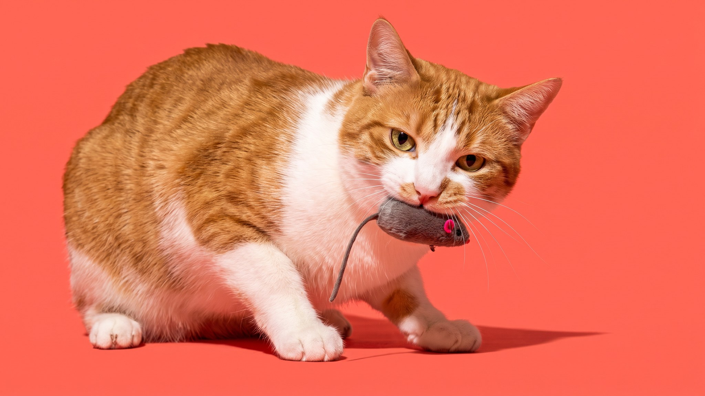

Утром ищете резинку для волос, а находите её под диваном рядом с двумя крышечками и пропавшей ещё в прошлый вторник ручкой. Кошка прячет вещи целенаправленно. За этим стоит конкретный охотничий инстинкт, и понять его полезно: некоторые из этих «трофеев» при проглатывании опасны.
🐾 У вашей кошки так же?
Расскажите в AnimaLife, как ведёт себя ваш питомец, — приложение объяснит причину и даст пошаговый план. Бесплатно, без записи к специалисту.
Разобрать свой случай → Разобрать в MAX →
У вас iPhone? AnimaLife есть в App Store
В дикой природе кошки не всегда съедают добычу сразу: они уносят её в укромное место, чтобы не потерять и поесть позже. Это называют кэшированием добычи. Домашняя кошка сыта, охотиться незачем, но инстинкт никуда не делся. Он срабатывает на мелкие лёгкие предметы, которые удобно захватить зубами и унести. Игрушечная мышь, носок, резинка, крышечка от бутылки: для кошки это «добыча», которую она поймала.
Вещи с запахом хозяина попадают в тайник особенно часто. Запах близкого человека кошка воспринимает как метку безопасности, поэтому ношеный носок или резинка с руки предпочтительнее безликого предмета из магазина.
Пик активности приходится на ночь. Охотничьи инстинкты обостряются в сумерках и после полуночи, когда в квартире тихо и никто не мешает «охоте».
Молодые кошки и подростки от 6 месяцев до 2 лет входят в самую активную группу. Им нужно куда-то деть охотничью энергию. Если игр мало или кошка живёт одна без пары, тайники с вещами становятся её главным развлечением. Склонность к «собирательству» встречается у всех пород, но у сиамских, бенгальских и абиссинских кошек она проявляется заметно чаще из-за высокой активности.
Прятать вещи нормально. Грызть и глотать их уже риск. Уберите из доступа кошки:
Нитки и резинки при проглатывании могут вызвать кишечную непроходимость. Это требует срочной помощи ветеринара. Если заметили, что кошка жуёт и глотает несъедобное регулярно, а не только прячет предметы, обсудите это с ветеринаром: такое поведение называют пикой, и оно требует отдельного внимания.
Кошка, которая активно «охотится» за вещами по ночам, кричит или разносит по квартире всё подряд, скорее всего недополучает нагрузку. Дело в дефиците охотничьей активности, а не в характере. Выход — игры по расписанию, а не запреты.
Поход к врачу нужен, если кошка не прячет предметы, а систематически жуёт и проглатывает несъедобное: полиэтилен, ткань, шерсть, резину. Это отличается от обычного «собирательства» тем, что кошка именно ест, а не укладывает вещь в тайник. Обсудите это с ветеринаром: он поможет разобраться в причине и подобрать план действий.
🐾 Хотите понять, что кошка говорит вам?
Опишите ситуацию или пришлите видео в AnimaLife — AI разберёт поведение вашего питомца и подскажет, что делать. Бесплатно, ответ за минуту.
Разобрать поведение → Разобрать в MAX →
У вас iPhone? AnimaLife есть в App Store
🐾 Понравился разбор?
Подпишитесь на канал — каждый день разбираем по одному тревожному симптому у кошек и собак: что в пределах нормы, а когда пора к врачу. Подпишитесь, чтобы не пропустить разбор, который может спасти здоровье вашего питомца.
Материал носит информационный характер и не заменяет очную консультацию ветеринара.